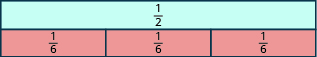
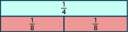
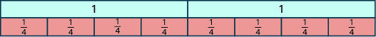
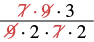

ভগ্নাংশের ভাগ
উৎস-অনুগত উপবিভাগ · m81286-fs-id2700526। সম্পূর্ণ বইয়ের অনুবাদ এখনও চলছে। গাণিতিক চিহ্ন, সংখ্যা ও মূল কাঠামো অক্ষুণ্ণ; প্রযোজ্য ক্ষেত্রে সূত্রের শব্দলেবেল বাংলায় অনূদিত। মূল ছবির ভিতরের ইংরেজি লেবেলের অর্থ বাংলা বিবরণে আছে। স্বাধীন শিক্ষক ও ভাষা-পর্যালোচনা বাকি। অন্য উপবিভাগের উৎস-লিঙ্কে ইন্টারনেট প্রয়োজন।
ভগ্নাংশের ভাগ
কেন গোনার গুটি দিয়ে আগে এর মডেল তৈরি করেছি। প্রতিটি দলে টি করে গুটি রাখলে টি গুটি দিয়ে মোট কতটি দল তৈরি করা যায়?
চারটি ডিম্বাকৃতি বেষ্টনী; প্রতিটির ভিতরে 3টি করে গোল গুটি, মোট 12টি গুটি।
এখানে টি দল আছে; প্রতিটি দলে টি গুটি। অন্যভাবে বললে, -কে চারবার নিলে হয় তাই,
ভগ্নাংশ ভাগ করলে কী হবে? ধরা যাক, এই ভাগফলটি নির্ণয় করতে চাই: জানতে হবে, মাপের কতগুলি অংশ মিলে তৈরি হয় এটি অর্ধেক মাপের অংশ। ভগ্নাংশের পাত দিয়ে এই ভাগের মডেল বানাতে পারি। প্রথমে অর্ধেক ও এক-ষষ্ঠাংশ মাপের পাতগুলি পাশাপাশি মেলাই; দেখো চিত্র [CNX_BMath_Figure_04_02_016]। দেখা যাচ্ছে, মাপের তিনটি পাতের মোট পরিমাণ অর্থাৎ অর্ধেক পাতের মাপ। তাই

উপরে একটি আয়তাকার পাত; তার চিহ্নিত ভগ্নাংশে লব 1, হর 2। নীচে একই দৈর্ঘ্যের আয়তাকার পাত সমান 3 ভাগে বিভক্ত; প্রতিটি ভাগের চিহ্নিত ভগ্নাংশে লব 1, হর 6।
অনুশীলন · এই প্রশ্নের লিঙ্ক
মডেল তৈরি করো:
সমাধান
লক্ষ্য হল খুঁজে দেখা, কতগুলি মাপের পাত মিলে তৈরি হয় প্রথমে মাপের একটি পাত নাও। তার নীচে মাপের পাতগুলি এমনভাবে পাশাপাশি সাজাও, যেন উপরের মাপের পাতটির সমান দৈর্ঘ্য হয়।

উপরে একটি আয়তাকার পাত; তার চিহ্নিত ভগ্নাংশে লব 1, হর 4। নীচে একই দৈর্ঘ্যের আয়তাকার পাত সমান 2 ভাগে বিভক্ত; প্রতিটি ভাগের চিহ্নিত ভগ্নাংশে লব 1, হর 8।
এক-চতুর্থাংশ মাপের পাতটি তৈরি করতে দুটি মাপের পাত লাগে। অর্থাৎ, দুটি পাত মিলে হয়
তাই,
অনুশীলন · এই প্রশ্নের লিঙ্ক
মডেল তৈরি করো:
সমাধান
জানতে চাই, মাপের কতগুলি অংশ মিলে তৈরি হয় নীচের মডেলে তা দেখানো হয়েছে।

উপরে দুটি একই দৈর্ঘ্যের আয়তাকার পাত; প্রতিটির উপরে লেখা 1। নীচে একই দৈর্ঘ্যের দুটি পাত, প্রতিটি সমান 4 ভাগে বিভক্ত; মোট 8টি ভাগের প্রত্যেকটির চিহ্নিত ভগ্নাংশে লব 1, হর 4।
আটটি মাপের অংশ মিলে দুটি গোটা হয়। গোটা সংখ্যা ও ভাগের সমীকরণটি হল
আর-একভাবে -এর মডেল তৈরি করতে এবার মার্কিন মুদ্রা ব্যবহার করি। ইংরেজিতে -কে প্রায়ই ‘কোয়ার্টার’ বলা হয়; চিত্র [CNX_BMath_Figure_04_02_023]-এ দেখানো কোয়ার্টার মুদ্রাটির মূল্য এক ডলারের এক-চতুর্থাংশ। তাই প্রশ্নটির অর্থ দাঁড়ায়, ‘দুই ডলারে কতগুলি কোয়ার্টার আছে?’ এক ডলারে টি কোয়ার্টার থাকে; তাই ডলারে থাকে টি কোয়ার্টার। আবারও পেলাম,
মার্কিন যুক্তরাষ্ট্রের একটি কোয়ার্টার মুদ্রার ছবি।
ভগ্নাংশের পাত দিয়ে দেখিয়েছি, লক্ষ করো, -ও সত্য। ও -এর মধ্যে সম্পর্ক কী? এগুলি পরস্পরের গুণাত্মক বিপরীত—লব ও হরের স্থান বদলালে একটি থেকে অপরটি পাওয়া যায়। এ থেকেই ভগ্নাংশ ভাগের নিয়মটি পাই।
আমাদের ও শর্তগুলি লিখতে হবে, যাতে কখনও শূন্য দিয়ে ভাগ না হয়।
অনুশীলন · এই প্রশ্নের লিঙ্ক
ভাগ করো এবং উত্তরটি লঘিষ্ঠ আকারে লেখো:
সমাধান
| প্রথম ভগ্নাংশটিকে দ্বিতীয় ভগ্নাংশের গুণাত্মক বিপরীত দিয়ে গুণ করো। | |
| গুণ করো। গুণফল ঋণাত্মক। |
অনুশীলন · এই প্রশ্নের লিঙ্ক
চলটির মান শূন্য নয় ধরে ভাগ করো এবং উত্তরটি লঘিষ্ঠ আকারে লেখো:
সমাধান
| প্রথম ভগ্নাংশটিকে দ্বিতীয় ভগ্নাংশের গুণাত্মক বিপরীত দিয়ে গুণ করো। | |
| গুণ করো। |
অনুশীলন · এই প্রশ্নের লিঙ্ক
ভাগ করো এবং উত্তরটি লঘিষ্ঠ আকারে লেখো:
সমাধান
| প্রথম ভগ্নাংশটিকে দ্বিতীয় ভগ্নাংশের গুণাত্মক বিপরীত দিয়ে গুণ করো। | |
| গুণ করো। আগে গুণফলের চিহ্ন নির্ণয় করতে মনে রেখো। | |
| সাধারণ গুণনীয়কগুলি দেখানোর জন্য নতুন করে লেখো। | |
| সাধারণ গুণনীয়ক বাদ দিয়ে লঘিষ্ঠ আকারে লেখো। |
অনুশীলন · এই প্রশ্নের লিঙ্ক
ভাগ করো এবং উত্তরটি লঘিষ্ঠ আকারে লেখো:
সমাধান
| প্রথম ভগ্নাংশটিকে দ্বিতীয় ভগ্নাংশের গুণাত্মক বিপরীত দিয়ে গুণ করো। | |
| গুণ করো। | |
| সাধারণ গুণনীয়কগুলি দেখানোর জন্য নতুন করে লেখো। |  একটি ভগ্নাংশে লবে 7 গুণ 9 গুণ 3 এবং হরে 9 গুণ 2 গুণ 7 গুণ 2। লব ও হরের সাধারণ গুণনীয়ক 7 ও 9 কেটে বাদ দেওয়া দেখানো হয়েছে। |
| সাধারণ গুণনীয়ক বাদ দাও। | |
| লঘিষ্ঠ আকারে লেখো। |